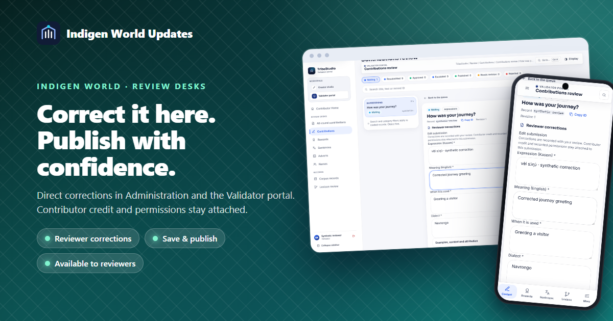
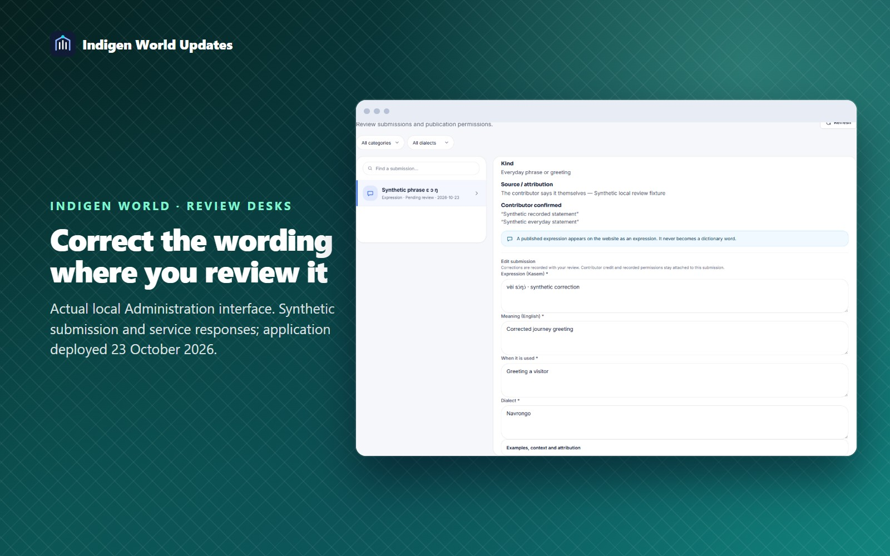
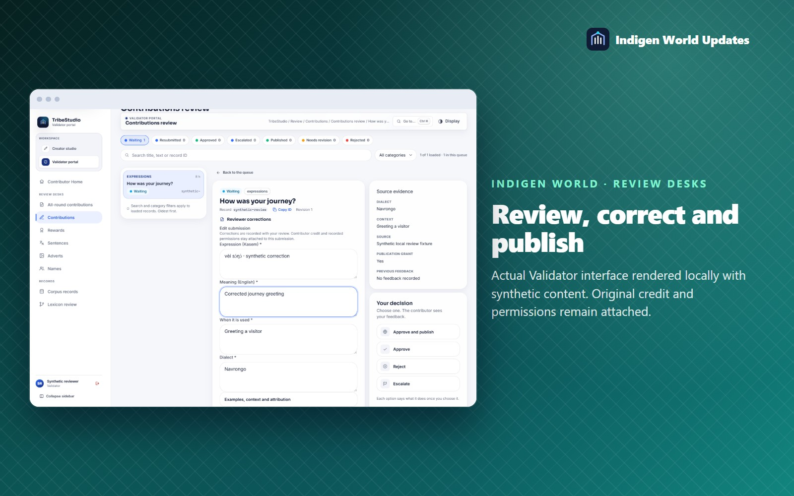
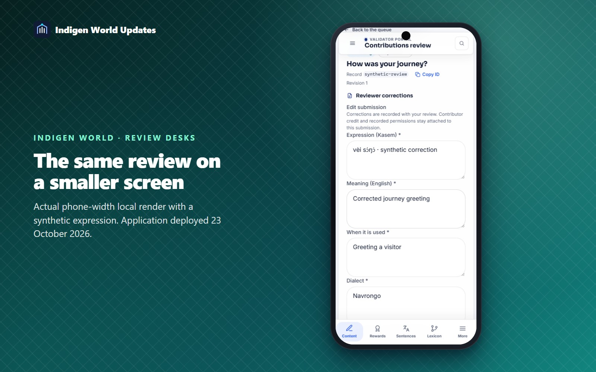

A review sometimes needs a small correction: a tone mark, a clearer meaning, an example sentence or a source attribution. Reviewers can now make those corrections directly in the Administration and Validator review desks, then save the work or publish it when permission allows.

Open a submission and choose Edit submission. Correct its content, meaning, dialect or context. Expand the additional sections for examples, attribution, individual dictionary meanings and word forms. Translation submissions also offer their translated content.
Choose Save corrections to keep the submission in its current status and continue reviewing. Corrections are saved with the submission and its linked contribution receipt, with before-and-after values recorded privately for accountability.

When a submission is ready and the contributor has granted publication permission, choose Approve and publish. Your corrections and the publication decision are applied together. If the work was already approved, its existing Publish action includes your corrections.
For a published submission, Save and publish updates the existing public record. The work keeps its contributor credit and stable identity. Expressions still publish as expressions, dictionary words as dictionary entries, and other work through its existing collection workflow.

Editing does not change who contributed the work or the permissions they recorded. Reviewers cannot use the editor to grant publication consent, change ownership or approve their own submissions. If another reviewer changes the record, the portal asks you to load the latest version before applying a decision.

This update was deployed on 23 October 2026. Open Administration’s Review Desk or the Validator portal, refresh if it was already open, and sign in with your existing reviewer account. Administration keeps its two-step verification. Live routes and application bundles were checked; the editing workflow was tested locally with synthetic submissions. It covers submission text and related content fields; replacing uploads and reviewing source documents remain separate workflows.